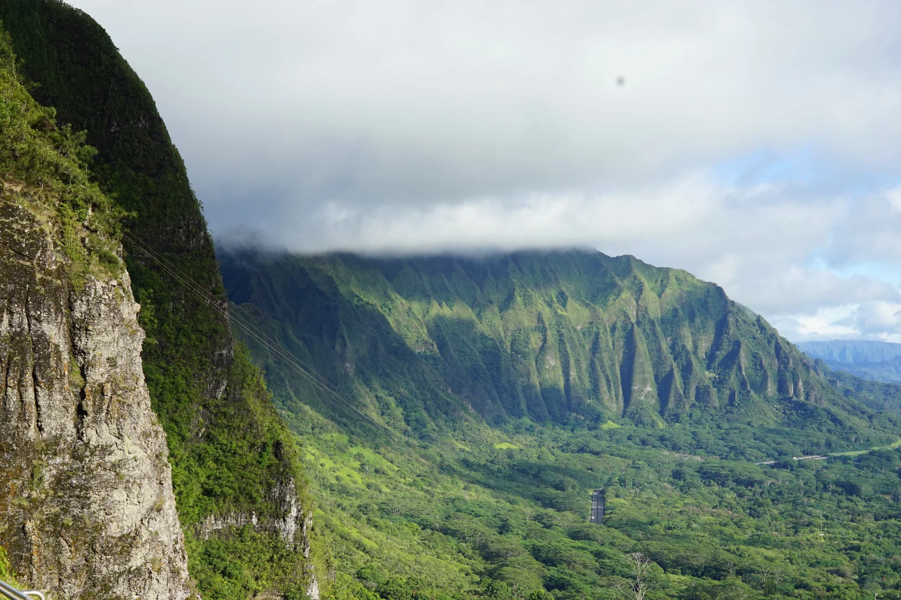

🏝️ 欧胡岛：侏罗纪与翡翠海岸
🏝️ Oʻahu: Jurassic Valley & Emerald Coast
Windward Coast → Kualoa Ranch → 北岸浮潜 → 檀香山
Windward Coast → Kualoa Ranch → North Shore → Honolulu
 🖼 replace
🖼 replace 🖼 replace
🖼 replaceLanikai Beach 🌅
Lanikai Beach 🌅
夏威夷公认最美沙滩。白沙+双岛+玛瑙绿水——本地人的私家海滩，只有我们和太平洋的日出。
Hawaii's most beautiful beach. Powder sand, twin islands, jade water — a local secret.

🖼 replaceNuʻuanu Pali Lookout 🌬️
Nuʻuanu Pali Lookout 🌬️
站在600米峭壁上俯瞰整条Windward Coast。风能把头发吹成图腾柱。落地的第一个震撼。
600m cliff over the entire Windward Coast. Hawaii's opening statement hits hard.
 🖼 replace
🖼 replaceShark's Cove 🐠
Shark's Cove 🐠
9月底水温28°，能见度全岛最顶。珊瑚礁鱼群密集到你伸手就能摸到——比Hanauma Bay清澈还不用抢票。
Late Sep water 28°C, peak visibility. Fish so dense they bump into you. No ticket needed.